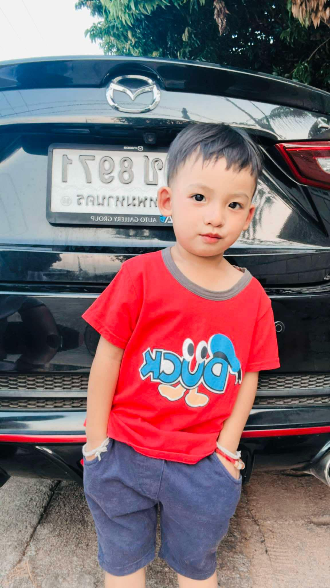

ฮันเตอร์: นักสำรวจตัวน้อย
ในเช้าวันอังคารที่ 31 มกราคม 2023 ท้องฟ้าสดใสต้อนรับการลืมตาดูโลกของ ด.ช.ภัทรชนน จันทร์จเร หรือ "ฮันเตอร์" เจ้าหนูน้อยผู้เปี่ยมไปด้วยพลังและความอยากรู้อยากเห็น
ตั้งแต่เล็ก ฮันเตอร์เป็นเด็กที่ร่าเริง ชอบสำรวจทุกสิ่งรอบตัว ไม่ว่าจะเป็นเสียงนกร้อง ใบไม้ที่ไหวตามลม หรือของเล่นชิ้นเล็กๆ ที่เขามักจะถือไว้ไม่ห่างมือ ดวงตากลมโตของเขาเต็มไปด้วยประกายแห่งความฉลาดและความอยากเรียนรู้
ทุกย่างก้าวของฮันเตอร์เต็มไปด้วยความตื่นเต้นและรอยยิ้มของคนรอบข้าง ไม่ว่าเขาจะวิ่งเล่น สำรวจ หรือหัวเราะเสียงดัง ก็ทำให้ทุกวันของครอบครัวสดใสขึ้น
ฮันเตอร์… นักสำรวจตัวน้อยของครอบครัว เติบโตขึ้นในทุกๆ วัน พร้อมจะค้นพบโลกใบนี้ไปทีละนิด ด้วยหัวใจที่แข็งแกร่งและจิตวิญญาณแห่งการผจญภัย
แจน: หัวใจของครอบครัว
สุณัฐชา กัณทา หรือ "แจน" ลืมตาดูโลกในวันที่ 29 สิงหาคม 1997 เธอเติบโตขึ้นมาเป็นหญิงสาวที่เข้มแข็ง อ่อนโยน และเต็มไปด้วยความรัก
ชีวิตของแจนเปลี่ยนไปอย่างสมบูรณ์แบบเมื่อเธอได้เป็นแม่ของ "ฮันเตอร์" ในวันที่ 20 มกราคม 2023 ตั้งแต่วินาทีนั้น เธอไม่ได้เป็นเพียงผู้หญิงธรรมดาอีกต่อไป แต่กลายเป็น หัวใจของครอบครัว เป็นคนที่คอยโอบกอด ดูแล และเป็นที่พึ่งพิงของลูกน้อย
แจนเรียนรู้และเติบโตไปพร้อมกับฮันเตอร์ ทุกเสียงหัวเราะและทุกย่างก้าวของลูกคือพลังที่ทำให้เธอเข้มแข็งขึ้น แม้จะเหนื่อยล้าแค่ไหน แต่เพียงได้เห็นรอยยิ้มของฮันเตอร์ ก็ทำให้ทุกอย่างคุ้มค่า
เธอไม่ใช่แค่แม่ แต่เป็นนักรบของลูก เป็นร่มเงาของครอบครัว และเป็นผู้หญิงที่สวยงามที่สุดในแบบของเธอเอง 💖✨
เป้: เสาหลักของครอบครัว
อัษฎาวุธ จันทร์จเร หรือ "เป้" เกิดในวันที่ 29 พฤษภาคม 1996 ชายผู้มุ่งมั่น อดทน และเต็มไปด้วยความรักที่ยิ่งใหญ่สำหรับครอบครัว
ชีวิตของเขาเปลี่ยนไปเมื่อ "ฮันเตอร์" ลูกชายสุดที่รักลืมตาดูโลกในวันที่ 20 มกราคม 2023 จากชายหนุ่มธรรมดา เขากลายเป็น พ่อ ที่พร้อมจะปกป้อง ดูแล และเป็นเสาหลักให้ครอบครัวเดินไปข้างหน้า
เป้ทุ่มเททำงานหนักเพื่อสร้างอนาคตที่มั่นคงให้กับภรรยาและลูก เขาอาจไม่ใช่คนที่พูดเก่ง แต่ทุกการกระทำล้วนเต็มไปด้วยความรักและความห่วงใย
เขาคือพ่อ คือฮีโร่ คือแรงผลักดันของครอบครัว และคือผู้ชายที่พร้อมจะทำทุกอย่างเพื่อลูกและภรรยาของเขา 💙✨

Home